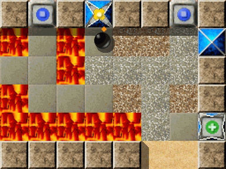
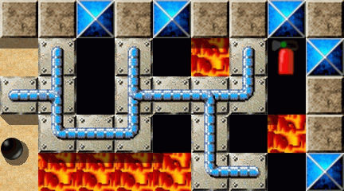
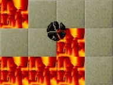
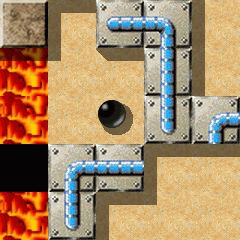
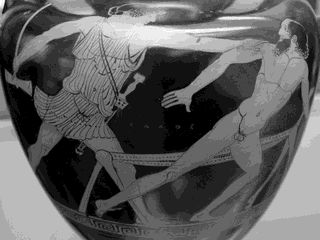
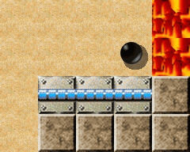
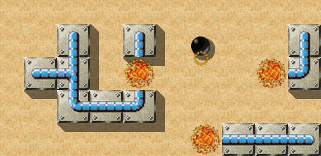
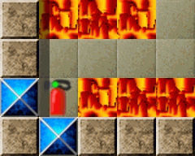
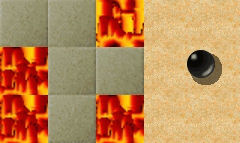
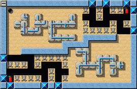

Level of the MonthEach month, we take a closer look at excellent Enigma levels. Excellent levels are those with the highest average user ratings and the greatest number of ratings altogether. Thus it is your vote that determines the Level of the Month. So please rate the levels you play and do not forget to submit your ratings together with your scores at the end of each month. You can find all previous Levels of the Month in our archive. December 2008: “Procrustes” by Andreas LochmannIn the last two years we've been talking about 10 epic levels with a strong emphasis on exploring and adventuring here at our column. These gorgeous multi-screen creations are the ones best loved by our players. We've also had the pleasure to talk about 6 excellent levels with a size of 2, 3 or 4 screens. Two months ago the first level with the classic size of just one screen has been awarded: “Industrial Puzzles” by Raoul Bourquin, and now the second represantative of this level species waits to step up onto stage and to receive his award. Although of the same kind they could hardly be more different. “Industrial Puzzles” is cluttered with various objects, the narrowness of the room may cause a feeling of oppressiveness, innumerable are the ways of failure - the player's in a state of confusion at first. Not so this month's LotM: The building gives the impression that it has been spaciously designed, just one sort of gaming object is presented to the player, everything's visible and easily understandable - you feel confused. The blue puzzle stones that appeared almost only in the role of designing elements in “Industrial Puzzles” are now playing the leading role. Instead of an industrial plant of modern times this month we find ourselves back again to Ancient Greece, as guests of an infamous hotel-manager: “Welcome to the hotel 'Procrustes' - such a lovely place”. Our host was so kind to start a fire in the guestrooms, which is quite comfortable at the beginning of the cold season. The warmth of the flickering flames make you feel at home - “such a lovely place”. Only the festive lights are still dark: As always it's up to you to light up the oxydean lamps. In level pack VI of Enigma 1.00 there has been a decade of levels dedicated to myths and legends of the ancient world. The most excellent of these levels has been (and of course still is) #36, and now has become our LotM December: “Procrustes”. This time there's not a report or a story waiting for you: Instead we're happy to present a decade of commentaries to you. Ten contributions, this is more than we had ever before in the by now 19-part history of LotM. Andreas will talk in detail about the “making” of his masterpiece, and Mecke, author of the reflective poetry of the “Novice” series, has written a lyrical essay. Together with the other 8 pieces an interesting medley of various thoughts and ideas in various styles of presentation is in store for you: United in one theme: “Procrustes”. Have fun reading. But first of all: Here's the visitor's book of the hotel “Procrustes”:

Enigma VI # 36
“What I like best about Procrustes is that it's pure Enigma”It's my honor to be asked to comment on Procrustes (VI #36) the December 2008 LotM. But first I want to congratulate Andreas Lochmann, for his creation has earned this prestigious ranking among Enigma's elite!

As a player who is often mouse-challenged and who doesn't aspire to world records, I like that there isn't a time limiting factor, and that the player does not need a great deal of mouse dexterity. In so many levels, the fire grows and grows. But here, it's simply a static obstacle.
There is a lot of meticulous moving around of stones, and the player must strategically think ahead, which as hallmarks of Enigma, no doubt contribute to its high ratings. I particularly enjoy the use of symmetry, and the kind of problems it presents, in this level.
What I like best about Procrustes is that it's pure Enigma: No extra specialized knowledge is needed to solve it. Everything needed to play is near at hand, on one screen. Although in this level, like many others, having the solution nearby does not necessarily mean it is quick or easy!
Until now, I thought the title had something to do with the fire, like burning something might make it 'crusty', lol! I tend not to see the anthropomorphic symbolism in Enigma, and instead just solve the puzzles based on the functions of the objects. But while becoming reacquainted with this level, I looked up 'Procrustes'. And it's really neat how Andreas Lochmann made this level to be so perfectly symbolic of the mythological character—it's very, very clever!
While it's not nearly as complex or difficult as most other Levels of the Month, I think Procrustes, on all counts, exhibits the archetypal characteristics of the Levels of the Month.
“For me no meditation level has such a strong meditative aspect like 'Procrustes'”Two or three hours after midnight. The first tunes of a lap steel guitar come out of the headphones - a slow country song … somehow familiar … “Well she's walking through the clouds, with a circus smile that's running 'round …” - Err?! - Pardon? - “Little Wing” interpreted as a country song? … “It's alright” … And how! It really works! Just about the limit!
Well for the current level it's: “This is the end my friend”. Concentration vanishes into thin air. “ … it's alright … ”. And replay. … And again.
For the moment “Procrustes” was history - a story without an end.
In the following weeks “Procrustes” cleverly gave a wide berth to me - but probably it was the other way round. Finally it was inevitable. So I went for the oustanding solution. BTW the playlist was set to 'random'. I started “Procrustes”, and accidentally the next song began: The first tunes of a lap steel guitar … Déjà-vu: I realized at once that it was together with this level that I had heard this idiosyncratic version of “Little Wing” for the first time. Coincidence only?

I couldn't solve “Procrustes” this time. But the next time it worked much better accompanied by the - now intentionally chosen - right song.
Since then “Procrustes” and John Campbelljohns version of the Hendrix classic belong together for me - two is a company. It's not very often that I can delve into a level so deeply, to forget about the time, even to become lost in it. For me no meditation level has such a strong meditative aspect like “Procrustes”. Perhaps that's because I discover new combinations for the puzzle stone actions again and again. Mostly the real aim to open the oxyds gets secondary. Definitely I never played any level more often without succeeding, and nevertheless felt myself satisfied, well-balanced and “riding with the wind”.
“The simple combination of magic wand/puzzle stones/abyss can be much fun”Shortly after I had discovered and downloaded Enigma 1.00, I came across “Procrustes” for the first time. This meeting didn't take too long - it was obvious to me, that the puzzle stones had to be sorted to bridge the gap: But the first complex of stones is just much too large, and the second one's much too small! Either has the author done a sloppy job (which is quite unlikely), or an extensive puzzle is behind it. But I was on my way through the new level packs at a cracking pace, so I just pushed F5 and continued with “Ariadne” instead. Not much of it stuck in my mind but the name “Procrustes”, which made me think of some figure of greek mythology - the levels around that area all seemed to deal with mythical beings.
What a big mistake! A few days later I opened Gustav Schwab's “Gods and Heroes: Myths and Epics of Ancient Greece” - and there he was: Procrustes, dislocator of limbs. “Was his visitor of tall stature, he showed him to the small bed. 'Alas! this bed's too small for you, my friend, but the situation can be helped soon.' Scornful laughter filled the room. And he cut the limbs of his poor guest to the size of the bed.” …

That was the key. With the following attempt to solve the level I realized how much fun the simple combination of magic wand/puzzle stones/abyss can be. In the second half of the level some slight mishaps happenened to me: during the transports occasionally I happened to shove one of the “limbs” against the wall. Usually that would mean to start all over again, not so with this landscape: Here an extra puzzle á la “Push? Pull!” is offered to the player. I can't remenber to have come across any level in Enigma with such generous error tolerance. Twenty minutes later all oxyds had been opened - and never a dull moment. A fantastic job of the level author.
To all who played through “Procrustes” only once, and then checked it off: I warmly recommend to give it another try. What put me off at first was the time needed to solve the level. But then on my second attempt, being more experienced now, I managed to almost halve my record. The puzzle stones are arranged in a new way each time the level is started (thanks to the “libpuzzle”), so there's no definite way to solve the level - another peculiarity of this landscape. Each time new constellations can be discovered, which are waiting to be solved. And after all we're not handling living materials like our “great” example - so we're free to give way to our drive to play around and experiment. Probably there has been no other onescreener that kept me occupied for such a long time.
The first time I saw “Procrustes” it looked pretty confusing to me.Two big holes in the ground, two heaps of puzzle stones: They seemed to
match perfectly at first glance. And the fire, burning for eternity:
It's still one of Enigma's most peculiar elements to me, I really can't
say why. I think it was because of the many new levels that had been
added to Enigma then, that I laid it aside for a few days without even
starting to play it once.
Some time later I finally took up the level. I quickly found out that
the heaps of puzzle stones indeed match perfectly with the holes -
although just mirrored and not like I had them in mind initially. After
realizing that, I was even more confused than before, but somehow I
managed to make good use of the available magic and to fill both holes
with the blue materials.
At large it is another quite successful level by Andreas. The best in
my opinion isn't the level itself, but the marvellous reference to the
name. I knew it was part of the “mythology-decade” and the name somehow
seemed familiar to me, but it took me a while to recall the thing with
the beds, being either too small or too large. Congratulations to
Andreas for his fortunate production of the name-giving myth.
“The level impresses with its obvious logic and clarity”

The original
Monsters are not an invention in modern computer games, but they have
been frightening us since the dawn of mankind. We discover a considerable
number of their ilk in Greek mythology. A particularly insidious monster
was the giant Procrustes (= someone who dislocates limbs, his real name
was “Damastes”): Driven by pathological constraints for standardization,
he captured harmless passing hikers and in one of his two beds: He
stretched the short people to fit his long bed and shortened the
towering legs of the tall ones to fit his short bed, crudely laughing
while he chopped! Only Theseus succeeded in beating this baddie.
In this level we enter the rooms of Procrustes and become him. Two hikers
in the form of puzzle stones are already waiting for their adaptation.
In the first room, above left, we easily find that a few changes are
needed to adapt the hiker and push him to the left “bed”, surrounded by
flames. It is however a tight fit and it can happen that puzzle stones
unintentionally connect at undesirable points or perhaps go to the brink
and then can be brought back into the game with hooks only (or F3).
When we have solved the first part of this level, a second hiker is
waiting in the lower right area. Here is an even tighter fit and only
a temporary relocation of parts can adjust this situation. Thankfully,
the author has given us an indispensable tool which is now available
and without which our marble would burst from the flames. A judicious
short-term stint as a firefighter and the transport problems are solved.
Thus, the first five Oxydstones are safely accessible. Hopefully,
however, the leftover stones of the first action are still available!
Finally, we will succeed, and we can pass the second path through the
sea of flames to the remaining Oxydstones after a couple of walks.
Success!
The level impresses with its obvious logic and clarity. The task is
undoubtedly to solve and no oppressive rotor disturbs our approach.
Only skill in dealing with the marble and a planned action to move
the puzzle stones is needed; for the experienced Enigma or Oxyd fan
certainly not an insurmountable problem. Proper using the aforementioned
utensil is absolutely necessary. A small temptation to a shortcut is
also available. One might think that it will simplify the work to push
a few stones from the puzzle box in the upper left hand room to the
subjacent room and speculate for a subsequent docking. Perhaps it is
worth the attempt, but perhaps not.
All in all a good fun level that requires planning.
“Procrustes is far subtler than it first looks”Hmm, Procrustes, wasn't he that dude who cut and stretched people,
so they'd fit in his beds? Wonder why it's called that? Well, it looks
easy enough - neat but probably won't ever make level of the month.
Just push these bits around with the wand - shove it in the gap and
… ah … so that's why it's called “Procrustes” …

Those were just some of the thoughts which went through Tarim's head
when he first played Procrustes (or would have been if Level of the
Month had been invented then). Procrustes is far subtler than it first
looks. Although it's easy to slip and trap a piece against a wall -
it's often possible to use the wand to construct a shape to retrieve it.
Tarim seems to have spent more time on it after he solved it with
problems like: Can he pass any of the “legs” he cut off through the gap
in the wall on the middle left? That way they could be ready and waiting
when the bottom “body” gets pushed into “bed”. Or could he do it just
using “body parts” without filling in all the gaps? There just
don't seem to be enough ends for the means. Will Tarim ever be Theseus
and put an end to all that cutting and stretching?
At the beginning, I thought I could do it very quicklyWhen I tried for the first time to play this level, I thought it was a very simple level. It did not take a long time to discover it was not true. It's a good level, and I liked it.
The goal is not very complicated and it's a WYSIWYG level. Nothing is hidden, nothing is secret, you can see every part. First you must cross an abyss with fire around it by building a ledge with puzzle pieces. It's a good beginning and when you arrive on the other side, you must build a new ledge from even more pieces and with even less space available. Don't forget to extinguish the fire in the first room at well chosen places, if you want to bring the puzzle pieces into the second room.
You must build the ledge very carefully, because there is not much space available. If you don't take care, you'll be blocked and you'll have to restart the level again. At the beginning, I thought I could do it very quickly … It was only a dream. I spent some days on it. Every time I started it, I told myself: It's the last time I try it, and every time, I did something wrong and I had to start again. This level requires thoughtful building, and you can be looking for the solution for a long time. Big brain work …
“Procustes” is an easy and pleasant level to play. No actors are chasing after the marble, and speed doesn't matter. This level is mainly about moving puzzle pieces. But when this work is done well, then you'll be really happy.
I like this level, it's interesting, but a little bit too
simple. Although I like it, it's not my preferred one among Andreas' levels.
Andreas Lochmann leads us with this level of the month back into the days of classical antiquity to the son of Poseidon, into … “A play with fire”Player of Enigma, Procrustes invites you! He's heard of you, and presents you now well-chosen delicacies: Stained oxyds, bluish stones and blazing flames. He laughs: “The fire will show you the way!” You feel surrounded: The omnipresence of the conflagration - these oppressing puzzle-stones next to you, they're not at all convenient … Coincidence? Not at all! Combine them! Stretch them, squash them - before HE does the same to YOU. Find the courage to look down into the abyss, but be aware of the flames … The flames distract me - Help! I'm not a firebird at all! Procrustes laughs again, and instead of sweetish bird-of-paradise tunes triumphantly Shostakovich's 4th symphony sounds: “My friend!” he says mischievously, “Look around and see who's in power here. Inspect the oxyds closely inside this gloomy room, you weak marbleous creature, afraid of me and the fire. But, yes: 'The fire can show you the way'”… “A play with fire (episode 2)”

Oops …
I'm losing my fears, I'm becoming a “poete de feu”. A vision emerges: “A bridge built from combined puzzle-stones, pushed across a sea of flames, lowered down into the depths of an abyss”. And that'll be the way: Can you see the magic wand? Puzzle-stones down in the abyss? Combined in the right way a metamorphosis is happening - the combination of puzzle-stones - abracadabra - becomes passable. Conclude, consider the narrowness of the room, the uniqueness of the intermediate as well as of the final product (important!) - and after all, fear of the fire's deadly power has given way to hope, you're ready to become a custom tailor, making the product of puzzle-stones which will be “the way”. You've only got one chance - one small mistake and your prospects for the future are spoiled. Pay close attention to the right use of the wand: Abracadabra - and all you've built crumbles to the floor and turns to dust … “About squashing and stretching”Make right use of the magic wand! Something's out of place in this room … Become a master of the Stretching Arts: From the individual parts generate a total worthy of Procrustes. The sands of time are trickling through the hourglass of fate. If you've been successfull, then you'll know: “The fire has shown you the way”. You've managed to enchant the puzzle-stones: Procrustes has respect for you, my little Procrustes, Bird of Fire, Solver of Puzzles, Master of Balance: Exam passed. And once again you derived pleasure from one of Enigma's mythological inspired levels: Andreas, we'd like to see more of it! Where's Poseidon, the Father? And Theseus, the Executioner? Or Aphrodite, the Beauty? Zeus already can be found in our level packs, but that's another Enigma theme. “Everything seems to be so easy, but … ”

This onescreener is ingenious in its simplicity. The small number of used elements and the clarity of the thematical presentation impresses. Everything's visible, even the solution for the puzzle with the puzzle-stones: “The fire will show you the way”. Shape from the puzzle-stones the element you need, the Gods of the Enigman Olympus have granted the player a magic wand for such purposes … Are we really in need of the extinguishers? When combining the puzzle-stones our motto is “Compose the final 'movements' according to a 'suitable' key”. How easily we miss something important. “Oops, I didn't mean to … ”. Pay attention to the “connections” during the installation. Talking about connections:Andreas, we're all looking forward to coming marbleous games of yours, and we thank you for the gift of this “fiery” challenge. Non multa, sed multumThis old latin proverb expresses in my mind quite well, what the author must have had in mind when creating his work. It's not a multitude of gaming objects which he offers to the player, but the basic idea of the game (shortening and lengthening) has been elaborated with so much care in such a profound way, that it will take the player much time and many efforts to solve the puzzle - and he'll be rewarded by getting much pleasure from doing so.
But first of all my congratulations to Andreas for his first LotM award. He's written 12 excellent articles about excellent levels, and he's also not been completely uninvolved in the shaping of the last 6 ones, and now he's caught it: LotM. Serves you right, Andreas, if I may say so. ;-) “Procrustes” really is a level of excellent quality.
In his commentary on “Quadropolis” in October of last year Andreas wrote, that he likes to present new objects of Enigma in his own levels. For “Procrustes” that may not be completely true, but as far as I know there's no other level in whole Enigma in which the blue puzzle stones must be used in such an original way to build bridges as in “Procrustes”, here put into effects by means of the eternal fire: That's truely new, and unique until now.

Who's not aware how cleverly thought-out the whole thing is, might want to take a look at the reference manual. In chapter 4.3.45 the various characteristics of the puzzle stones are described in great detail, and in chapter 4.6 the new fire system of Enigma 1.0 is explained at some length. “Procrustes” by the way is the only level of Andreas in which the blue puzzle stones appear - and he's been able to credit remarkable 46 1/4 levels to Enigma's account by now.
The uniqueness of the bridge-building manoeuvre has been one of the reasons, that I frequently and with pleasure paid a visit to “Procrustes” during the last two years, the other reason's been the record given by the author: Although Andreas is not famous for travelling through the levels at Phaetonian speed, he's always been 7-6-5-4-3-2-1 minutes faster than me. In the course of time I managed to get closer and closer to his record, and I succeeded in inventing new ways of solving the puzzle each time, but still I was lightyears away from the presumably shortest possible time - Ronald's record.
Well, actually that was the only thing I didn't like too much about the level: That I couldn't manage to find the shortest possible way to get the operation “Procrustes” done, and therefore the matter of fact that it wasn't me holding the world record. But I hope that I could better this fault somewhere in the near past. ;-)
Many thanks to Moneymaker for the verbal pattern ;-) - and of course to Andreas for the fantastic level. :-)
A mail from September 8th, 2006:“Hi,
the next theme decade (pack VI, 31-40) shall
have the theme ”mythology“. Which emerges to
be quite a Procrustean bed for levels.
Which in turn raises the subject of this mail :-)
[…]”
As some of you might have already noticed, there occasionally are theme based decades in Enigma. I like some of them in retrospect, like the nightmare decade or the black-and-white decade, some I like less (like the blue decade II/81-90). The decades were one of the goals of Raoul's and my sorting attempts for Enigma 1.00. The last decade to belong to the original re-sort, was the ice decade at the end of pack V. However, after completing the re-sort lots of levels were added to Enigma prior to the actual release of 1.00, levels which became difficult to sort into new decades. Thus the final decade of 1.00, the mythology decade, which includes “Procrustes”, had to be planned through completely. With “Sisyphus” and “Zeus” only two levels existed as a basis for this theme. “Troy” was planned before construction of the decade as well, as an example level for chess stones (the theme “troy” resulted from the use of the chess stones, not vice versa), but I realized it only later. “Phaeton” was planted into the mythology decade afterwards as well. So it was time to write levels specifically to the theme “mythology”. For days, I cudgled my brains, combed through all possible mythologies of the ancient Greeks and Romans, searching for ideas for levels. “Prometheus” was among them … a level with fire and a marble bound by rubber bands? Quite a thin plan, but I kept it in my mind, just for the case, that one level would still be missing. However, “Prometheus” has never been realized. I particularly looked out for motives in mythology, which were easy to abstract. The god Janus provided such a motive, although I'm very dissatisfied with the final implementation of the “Janus” level. Most myths are connected with battles in one way or another, something which is rarely compatible with Enigma's philosophy and gameplay. Virtually the whole Heracles saga fell in disgrace due to this. Unlike Theseus - where I got hold of the Procrustean motive. This story of Procrustes is a seldom used and hence less washed-out motive: Shorten what's too long, lengthen what's too short, no matter what the cost. This was something that should be realizable with Enigma! Well, when something in Enigma was to be lengthend or shortened, then it has to comprise of multiple parts, like puzzle stones. And it has to be comparable to something, it has to fit into something—just like puzzle stones! This also offered a chance to check Raoul's new libpuzzle. And so, the idea was born (during a bath, by the way). An appropriate shape of the puzzle was quickly found, a shape that could not be cheated upon, and the coarse version of the level stood. In this first version the two “beds” still were of equal size, the level was build symmetrical. But a difficulty became apparent: The upper, extra-long puzzle was too difficult to maneuvre and the parts could not easily be stored - there simply wasn't enough space to do this. I once again studied the old story of Procrustes, and only during a more precise reading I noticed that the original beds were of different lengths as well. I bit the bullet (how wonderful are symmetric levels after all!) and broke the symmetry of the level, in addition I tilted the middle line a little bit into the current, sloped position.

One of the earlier versions
I wasn't that sure about the fire and the design in the beginning, unsure how to do it. The new fire system was still in development, so eternally burning fire wasn't at my disposal yet. On the other hand I'd loved to use green grass as floor, which was going to be burnable in the new fire system. So at first I resorted to the new “it_death”, skulls, that lie on the floor. They couldn't be destroyed by pushing puzzles over them, this was good. And instead of a deep black abyss there was water, which fit well to the grass. But how should the player push the remaining puzzle stones to the other side? A switch to remove the it_deaths? Inelegant. So, fire and an extinguisher after all. But with which design, when water would evaporate and grass would start to burn? Initially, I wanted to use grass to illustrate the area, in which Procrustes lived. I searched for a solution for a relatively long time, but after all I came back to the “emergency plan sand”. Later I once more thought about this decision, as Siegfried Fennig reported to us that the type of stones that has been used in “Procrustes” among others, was in another hue than the original stone. As the original didn't fit as well to sand, I considered to fully redo the design of “Procrustes” once more. But as I realized that there were other levels as well which suffered from the change to the original hue, we decided to include both hues of the stone in Enigma. Just another aspect in which “Procrustes” became a proving ground, like with the fire system, it_death and libpuzzle. Procrustes gave lots of pleasure to me - as part of the mythology decade, as a level with relatively simple concept and still high popularity, and that I was able to hold the world record for this level for a long time by myself, as I learned some tricks how to handle the puzzle stones while test-playing the level. And today it once again gives pleasure to me, because it has been awarded as first of my levels to become Level of the Month - many thanks to all players out there, I hope, you had the same fun playing as I had writing!
Season's Greeting, and IV/2, Dear reader, we have a constant need for articles from you about Enigma's great levels. Please, send us any articles, even comments, you write to: enigma-devel@nongnu.org We're particularly interested in articles about the following levels:
Many thanks in advance, only your help can keep the LotM alive! Your Enigma Team |